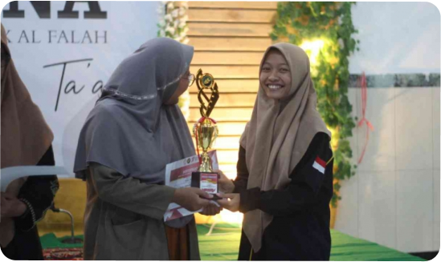

Pentingnya Apresiasi di Kalangan Anak Muda
Era sekarang ini, banyak lahir generasi-generasi anak muda dengan berbagai sebutan. Seperti anak milenial, gen-z, sandwich generation, dan berbagai sebutan lainya. Pembagian generasi anak muda pada zaman sekarang ini menjadi perbincangan publik yang cukup hangat. Ciri-ciri dan sikap setiap generasi itulah yang membedakan antara ketiganya. Penting sekali di era saat ini apresiasi berperan aktif dalam segala bentuk kegiatan. Apresiasi sendiri adalah sebuah sikap menghargai, merespond, serta bukti penghargaan terhadap suatu hal yang telah dilakukan. Apresiasi sendiri sebaiknya diaplikasikan oleh orang tua untuk anaknya, tidak hanya ketika sang anak berhasil meraih prestasi, namun juga penting diaplikasikan kepada anak yang gagal dalam sebuah proses.
Fokus apresiasi yang lebih luas, kepada anak-anak dalam berbagai kalangan yaitu balita hingga remaja. Tidak hanya karena prestasinya, melainkan juga kegagalanya. Karena peran apresiasi di zaman sekarang itu penting untuk mendorong berkembangnya potensi anak muda, dan menuju pola asuh yang sehat. Dengan berbagai gempuran konten-konten yang marak di media sosial terkadang membuat mental anak menurun, dari munculnya rasa pesimis hingga membuat anak remaja cenderung tidak mau melakukan kegiatan dan bersosialisasi. Penting diingat pola asuh yang baik tidak hanya memberi dorongan, namun juga memberikan apresiasi terhadap sesuatu hal yang dilakukan oleh anak muda zaman sekarang. Apresiasi segala ide dan gagasan anak muda, sekecil apapun progresnya, sehingga mampu mendorong segala potensi yang dimiliki mereka.